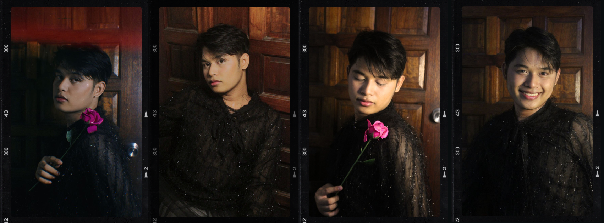
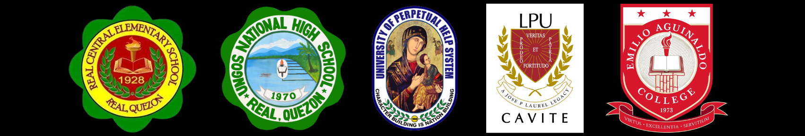

John Mark M. Solis, a young dreamer hailing from Silang, Cavite, embarked on a remarkable journey of self-discovery from the moment of his birth on July 8, 2001. Born into a family of seven, John Mark is the beloved son of Rommel and Mylene Solis, and he shares his home with three cherished siblings: Rafael, Xyriel Mae, and Mharcus Dave. He raised in the small town of Real, Quezon, where he enjoyed the breathaking nature and peaceful life typical of what is often referred to as "probinsyano" life.
Since childhood, John Mark has been captivated by the wonders of the world around him. His insatiable curiosity and thirst for knowledge led him through the corridors of education, where he laid the foundation of his academic pursuits. He completed his primary education at Real Central Elementary School, fostering a strong academic base that would later shape his future endeavors. Moving forward, he continued his educational journey at Ungos National High School for his junior high school studies, where he graduated with honors. John Mark's academic prowess and passion for science guided him towards the fields of Science, Technology, Engineering, and Mathematics (STEM) at the University of Perpetual Help System JONELTA-GMA Campus. Here, he thrived, excelling in his studies and graduating with flying colors, a testament to his dedication and perseverance.
However, life's path is seldom without its challenges. Despite his initial pursuit of a degree in Civil Engineering at Lyceum of the Philippines University-Cavite, unforeseen circumstances and financial hurdles necessitated a change in direction. Undeterred by setbacks, John Mark redirected his focus towards a new passion, enrolling in BS Computer Science at Emilio Aguinaldo College-Cavite, where he currently continues his academic journey.
Beyond academics, John Mark's life is rich with diverse interests and talents. He possesses a love for exploring himself, thriving in environments where ideas flow freely and collaboration breeds innovation. In 2018, he was crowned Mister Senior High School at UPHS-GMA. His enthusiasm for the pageant world drove him to pursue titles and bring pride to his family. Here is a list of John Mark's additional skills and interests:
These interests and talents foster an affinity for human connections, teaching him invaluable lessons in empathy and communication—skills that extend far beyond the classroom.

Looking ahead, John Mark envisions a future where he can make a positive impact on the world around him. Whether through acts of kindness, creative pursuits, or simply by being a supportive presence, he is committed to leaving a meaningful imprint on his community and beyond. In essence, John Mark M. Solis embodies the spirit of exploration and growth—a young individual driven by curiosity, resilience, and an unwavering commitment to personal development. As he continues to navigate the twists and turns of life, John Mark eagerly embraces each new chapter, guided by the belief that every experience, whether challenging or triumphant, contributes to the canvas of his life's journey.
To know more about John Mark click here.